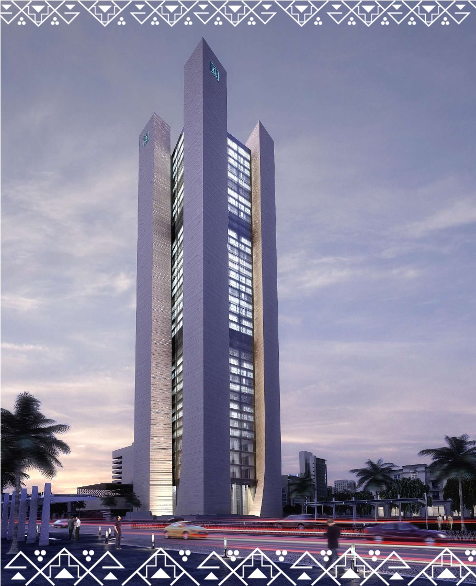
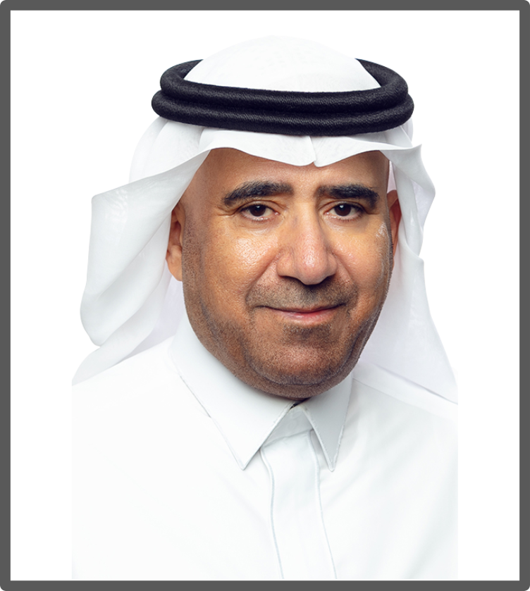

<div class="portfolio-ajax-page">
    <div class="project-description">
        <div class="content">
            <div class="tabs">
                <div class="container-fluid">
                    <div class="row">
                        <div class="col-sm-12 col-md-12 col-lg-10">
                            <ul class="nav nav-tabs" id="myTab" role="tablist">
                                <li class="nav-item">
                                    <a class="nav-link active" id="home-tab" data-bs-toggle="tab" href="#home" role="tab" aria-controls="home" aria-selected="true">About Bank</a>
                                </li>
                                <li class="nav-item">
                                    <a class="nav-link" id="snb_chr-tab" data-bs-toggle="tab" href="#snb_chr" role="tab" aria-controls="snb_chr" aria-selected="false">About Chairman</a>
                                </li>
                            </ul>
                        </div>
                    </div>
                </div>
                <div class="tab-content" id="myTabContent">
                    <div class="tab-pane fade show active" id="home" role="tabpanel" aria-labelledby="home-tab">
                        <div class="container-fluid">
                            <div class="row">
                                <div class="col-sm-12 col-md-11 col-lg-8">
                                    <div class="banks_modal_logo">
                                        
                                    </div>
                                    <div class="chairmen_txt">
                                        <p>Al Rajhi Bank is a diversified, sharia compliant bank with paid up capital of SAR 16.25 Billion (USD 4.3 Billion). Founded in 1957 and headquartered in Riyadh, Kingdom of Saudi Arabia, we provide banking, home finance, and consumer and commercial finance through more than 800 locations, 5,000 ATMs, 200 Self Service Kiosks, digital (online and mobile), and contact centers, and we have offices in 3 countries -  Malaysia, Jordan and Kuwait to support customers who conduct business in the global economy. With approximately 10,000 active, full-time team members, we serve one in three households in the Kingdom of Saudi Arabia and ranked No. 1 Banking Brand in the Kingdom of Saudi Arabia on The  Brand Finance - Banking 500 2018 rating. </p>
                                        <p>We ranked largest in assets and market capitalization among all Islamic banks on July 31, 2018. We use our Vision and Values to guide us toward growth and success. Our vision is to be a trusted leader delivering innovative financial solutions to enhance quality of life everywhere we operate.  </p>
                                        <p>We aspire to create deep and enduring relationships with our customers by providing them with an exceptional experience and by discovering their needs and delivering the most relevant products, services, advice, and guidance. We have seven primary values, which are based on our vision and provide the foundation for everything we do.</p>
                                        <a style="color:#000" href="https://www.alrajhibank.com.sa/" target="_blank">www.alrajhibank.com.sa/</a> 
                                    </div>
                                </div>
                                <div class="col-sm-12 col-md-11 col-lg-4">
                                    
                                </div>
                            </div>
                        </div>
                    </div>
                    <div class="tab-pane fade" id="snb_chr" role="tabpanel" aria-labelledby="snb_chr-tab">
                        <div class="container-fluid">
                            <div class="row">
                                <!--<div class="col-sm-12 col-md-6 col-lg-6">-->
                                <!--    <div class="banks_modal_logo">-->
                                <!--        -->
                                <!--    </div>-->
                                <!--</div>-->
                                <!--<div class="col-sm-12 col-md-6 col-lg-6">-->
                                <!--    <div class="banks_modal_logo">-->
                                <!--        -->
                                <!--    </div>-->
                                <!--</div>-->
                                <div class="col-sm-12 col-md-4 col-lg-3">
                                    <div class="banks_modal_logo">
                                        
                                    </div>
                                    
                                    <div class="chairmen_txt">
                                        <h4>Mr. Abdullah S. Al-Rajhi</h4>
                                        <h5><br>Chairman of the <br>Board of Directors <br>of Alrajhi bank</h5>
                                    </div>
                                </div>
                                <div class="col-sm-12 col-md-8 col-lg-9 second_tab chairmen_txt">
                                    <p>Mr. Abdullah Suliman Al Rajhi is the Chairman of the Board of Directors at Alrajhi Bank.</p>
                                    <p>With a career spanning more than 35 years in banking and financial services, he has worked in different capacities and roles and risen to the leadership positions such as Managing Director and CEO at Alrajhi bank, where he played a key role in shaping the institution’s long-term success and position the bank as one of leading financial institutions globally.</p>
                                    <p>He has played a major role in transforming Alrajhi Exchange and Trade Company, which originally specialized in FX services, into a full-service Bank that evolved into a Public Joint Stock Company. This transformation strengthened the institution’s market standing and expanded its presence in the capital market.</p>
                                    <p>His strategic leadership also led one of the Bank’s most important transformation projects, focused on redefining the bank’s new identity. This included modernizing the bank’s branch network and launching new services like internet and phone banking. These services have become one of the most advanced digital solutions globally, strengthening Alrajhi Bank’s reputation as an industry leader in digital innovation, particularly in the retail banking segment.</p>
                                    <p>He also spearheaded the establishment of Alrajhi Capital, a brokerage and investment group that is now one of the leading investment companies in the region. Mr. Abdullah Al Rajhi has also helped create other successful companies, such as Alrajhi Cooperative Insurance, which offers innovative insurance solutions.</p>
                                    <p>
                                        With the growing importance of digital technology, under his leadership the Alrajhi group have launched companies like Emkan and Neoleap to provide end-to-end digital financial and payment solutions, allowing AL RAJHI Bank to stay at the forefront of banking innovation.
                                        <br>Alrajhi Bank has expanded its reach beyond its home country, with branches now operating in Jordan and Kuwait, as well as a fully owned banking subsidiary in Malaysia. This shows the bank’s growing global presence, based on Chairman’s vision and leadership.
                                        <br>In addition to his role as Chairman of  Alrajhi Bank, Mr. Abdullah Al Rajhi serves as Chairman and Board Member for several other companies in different industries.
                                        <br>He holds a degree in Business Administration from King Abdulaziz University, and his contributions to banking and financial services are widely respected.
                                    </p>
                                    <a style="color:#000" href="https://www.alrajhibank.com.sa/en/About-alrajhi-bank/Board-Members/Mr-Abdullah-S-Al-Rajhi" target="_blank">www.alrajhibank.com.sa/en/About-alrajhi-bank/Board-Members/Mr-Abdullah-S-Al-Rajhi</a> 
                                    

                                </div>
                            </div>
                        </div>
                    </div>
                </div>
            </div>
        </div>
    </div>
    <!--<div class="bank-border"></div>-->
    
</div>
